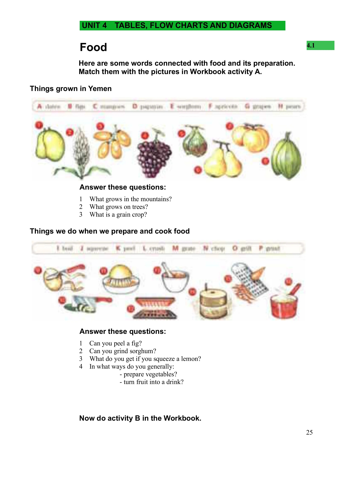

UNIT 4 TABLES, FLOW CHARTS AND DIAGRAMS 4.1 Food Here are some words connected with food and its preparation. Match them with the pictures in Workbook activity A. Things grown in Yemen A dates | B figs | C mangoes | D papayas | E sorghum | F apricots | G grapes | H pears Pictures 1–8: 1 mangoes | 2 sorghum | 3 dates | 4 grapes | 5 figs | 6 pears | 7 apricots | 8 papayas Answer these questions: 1 What grows in the mountains? 2 What grows on trees? 3 What is a grain crop?
Things we do when we prepare and cook food I boil | J squeeze | K peel | L crush | M grate | N chop | O grill | P grind Pictures 9–16: 9 peel | 10 chop | 11 squeeze | 12 grill | 13 crush | 14 grind | 15 grate | 16 boil Answer these questions: 1 Can you peel a fig? 2 Can you grind sorghum? 3 What do you get if you squeeze a lemon? 4 In what ways do you generally: - prepare vegetables? - turn fruit into a drink? Now do activity B in the Workbook.
[
{
"letter": "A",
"word": "dates",
"ar": "تمر / رطب",
"answer": "3"
},
{
"letter": "B",
"word": "figs",
"ar": "تين",
"answer": "5"
},
{
"letter": "C",
"word": "mangoes",
"ar": "مانجو",
"answer": "1"
},
{
"letter": "D",
"word": "papayas",
"ar": "بابايا",
"answer": "8"
},
{
"letter": "E",
"word": "sorghum",
"ar": "ذرة رفيعة",
"answer": "2"
},
{
"letter": "F",
"word": "apricots",
"ar": "مشمش",
"answer": "7"
},
{
"letter": "G",
"word": "grapes",
"ar": "عنب",
"answer": "4"
},
{
"letter": "H",
"word": "pears",
"ar": "كمثرى",
"answer": "6"
},
{
"letter": "I",
"word": "boil",
"ar": "يغلي",
"answer": "16"
},
{
"letter": "J",
"word": "squeeze",
"ar": "يعصر",
"answer": "11"
},
{
"letter": "K",
"word": "peel",
"ar": "يقشّر",
"answer": "9"
},
{
"letter": "L",
"word": "crush",
"ar": "يهرس",
"answer": "13"
},
{
"letter": "M",
"word": "grate",
"ar": "يبشر",
"answer": "15"
},
{
"letter": "N",
"word": "chop",
"ar": "يقطّع/يفرم",
"answer": "10"
},
{
"letter": "O",
"word": "grill",
"ar": "يشوي",
"answer": "12"
},
{
"letter": "P",
"word": "grind",
"ar": "يطحن",
"answer": "14"
}
][
{
"num": 1,
"prompt": "1 You have to ______ a mango before you can eat it.",
"answers": [
"peel"
]
},
{
"num": 2,
"prompt": "2 When you ______ cheese, you get long, thin pieces.",
"answers": [
"grate"
]
},
{
"num": 3,
"prompt": "3 You need a ______ to chop vegetables.",
"answers": [
"knife"
]
},
{
"num": 4,
"prompt": "4 You have to ______ water before you can make tea.",
"answers": [
"boil"
]
},
{
"num": 5,
"prompt": "5 To ______ meat, you place it under the heat.",
"answers": [
"grill"
]
},
{
"num": 6,
"prompt": "6 When you ______ an orange, you get orange juice.",
"answers": [
"squeeze"
]
}
]{
"pb_text_vs_image": "استُخرجت بطاقات المحاصيل A–H والأفعال I–P ومطابقتها للأرقام 1–16 بصرياً عبر تكبير pb27_600-27.png وpb25_cook_L.png وpb25_cook_R.png بدقة 600 DPI.",
"wb_ocr_vs_image": "طُوبقت ص 41 مع wb-042.png وصُحّحت مربعات 4.1 A ('Ads dcOp...') ودمج 'Fillin' ← 'Fill in' في B."
}